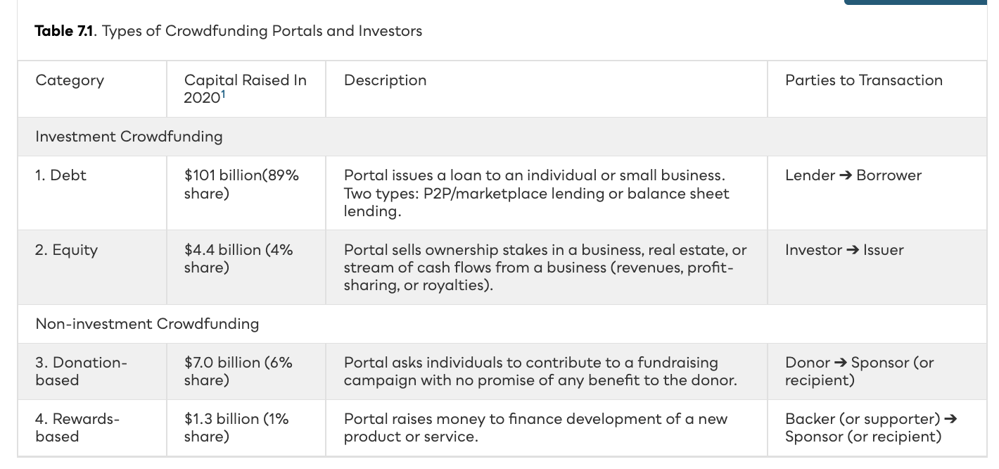
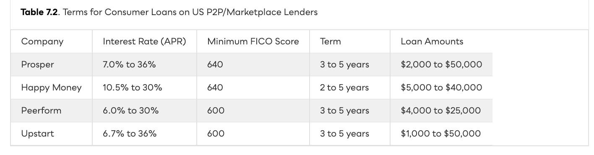
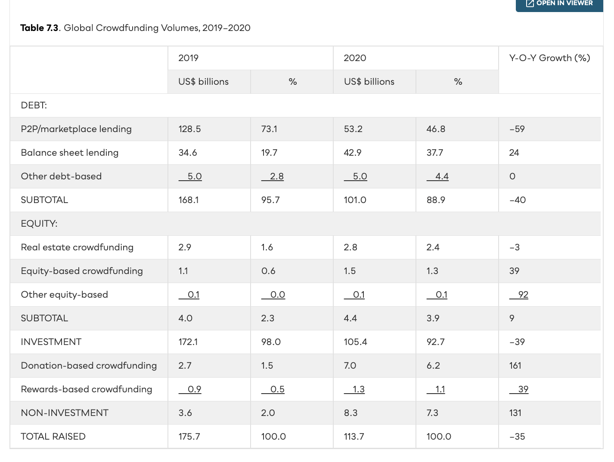
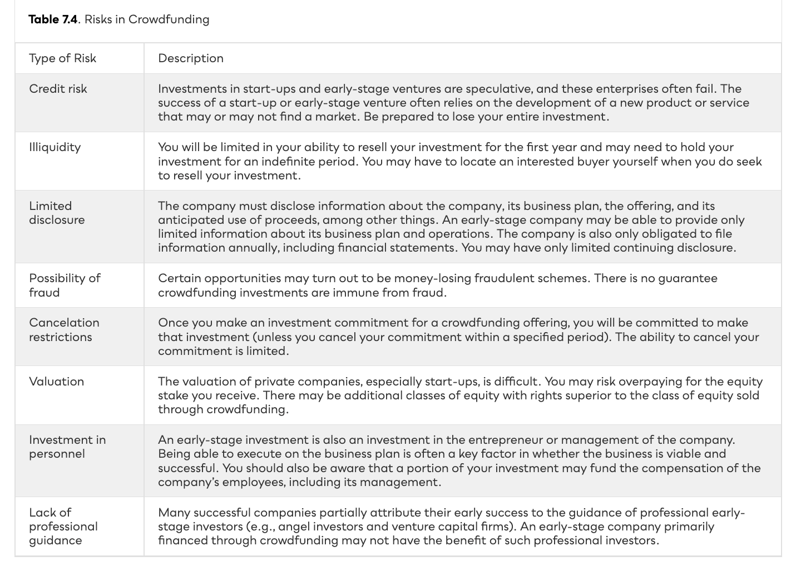
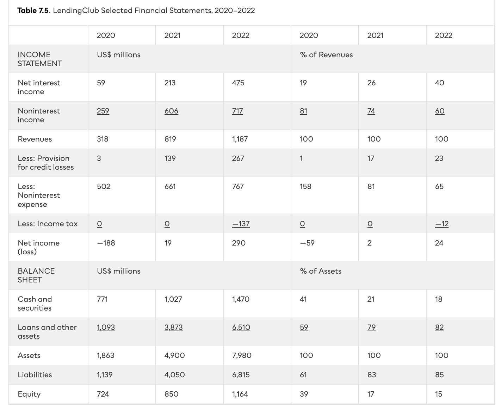
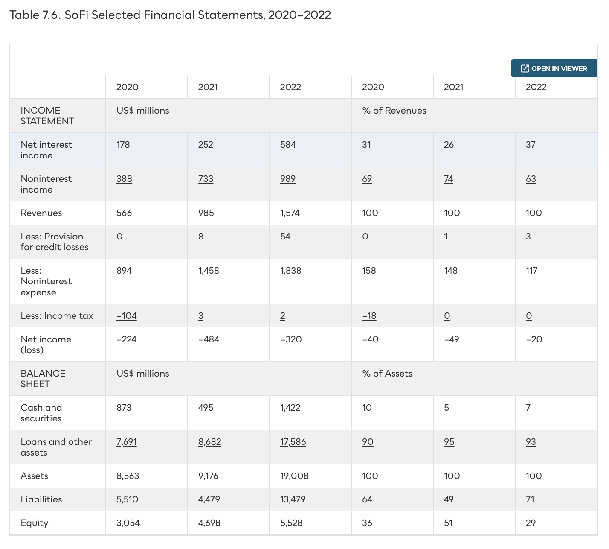

Crowdfunding & P2P Lending
Raising capital directly from the crowd — debt, equity, donations, and rewards — and why disrupting the bank turned out to be far harder than it looked.
Raising money directly from the crowd.
Crowdfunding lets individuals, businesses, and social causes raise capital as debt, equity, donations, or rewards — faster and simpler than the screening of banks and broker/dealers. Low barriers to entry: by 2022 Crunchbase counted ~1,500 active US platforms, plus 200 already closed.
Four models — but debt dominates the dollars.
Investment crowdfunding (debt and equity) expects a financial return. Non-investment crowdfunding (donations and rewards) is driven by other motivations. Capital raised in 2020 — Cambridge Centre for Alternative Finance.

P2P/marketplace vs. balance sheet lending.
How a marketplace loan actually works.
The original P2P model let the crowd fund loans directly — individuals committing a small slice of each. The portal is the intermediary: it screens, rates, and matches, but the lender carries the credit risk.
The money comes from institutions.
As demand outgrew retail capital, portals opened to hedge funds, banks, and insurers who treat online loans as an alternative asset class. ~85% of Prosper’s funds are institutional; LendingClub and Funding Circle shut their retail channels entirely.

Using AI to lend to the businesses banks ignore.
Two former bank executives saw small businesses stuck without funding or overpaying for merchant advances. Lendified is a balance sheet lender — it originates and holds loans, funded by institutional credit facilities.
Pop quiz · reading the borrower.
Pop quiz · who defaults?
Pop quiz · nudges & who succeeds.
Pop quiz · raising money.
Pop quiz · algorithms & bias.
Pop quiz · smart money.
Pop quiz · how marketplace lending works.
Pop quiz · scale & motivation.
Pop quiz · trust & turmoil.
Pop quiz · the long game & fees.
What the research finds.
Competition & financial inclusion.
Discrimination & bias in alternative finance.
All-or-nothing vs. keep-it-all.
Because most start-ups fail, regulators cap retail exposure: US Reg CF limits investment to the greater of $2,200 or 5% of income (10% above $150K income); Canada caps CA$2,500 per deal (CA$10,000 with dealer advice). Accredited-only platforms like AngelList face fewer rules.
Donations & rewards.
A boom, a fraud wave, a crackdown.

COVID-19 reshaped the mix.


Marketplace loans run on partner banks.

Ease, speed, access.
Banks won’t lend to a start-up without revenue or collateral, and VCs wait for traction. Crowdfunding fills the pre-seed gap — or lets entrepreneurs pre-sell the product itself.

How crowdfunding portals make money.
From alumni-funded student loans to a one-stop bank.
The original use-case was pure P2P: alumni lending to MBA students. The inaugural program saw 40 Stanford alumni lend $2M to 100 students — built on the social bond between current and future graduates, and extremely successful.
A genuinely tough business.
Borrowers pay 3.0–6.5% origination plus 6–30%+ interest; investors pay 1–3% servicing and processing fees. But customer acquisition runs $500–$1,000 each — every listed portal fell below its IPO price.


Disruption scorecard.
The early hope was that portals would replace banks. Judged on what intermediaries actually do, they succeeded on one dimension, half-succeeded on another, and failed on three.
Disruption promised — an extra channel delivered.
Debt is ~90% of the dollars, and most funding now comes from institutions — “P2P” became marketplace lending. Running a portal is brutal: high acquisition costs and years of losses forced pioneers to pivot, sell, or shut down. Financial inclusion is contested: some online lenders reach underbanked areas, but most capital flows to borrowers who already had bank access — and risk-adjusted bias against minority borrowers persists.